세트는 손목으로 기록해요.
FitGymLog는 Android용 운동 기록 앱이에요. Galaxy Fit에서 재생을 누르거나 Wear OS 워치를 누르면 세트가 끝나고, 휴식이 끝나면 손목이 울려요. 무게는 원판을 눌러 맞춰요.
MIT 라이선스의 무료 오픈소스예요. Android 13 이상에서 쓸 수 있고, Galaxy Fit3, Galaxy Z 폴드, Wear OS 에뮬레이터에서 테스트했어요. 지금은 Google Play 대신 APK로 설치해요.
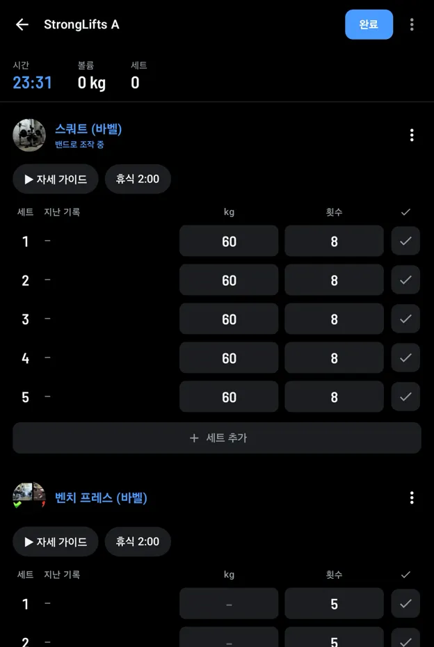
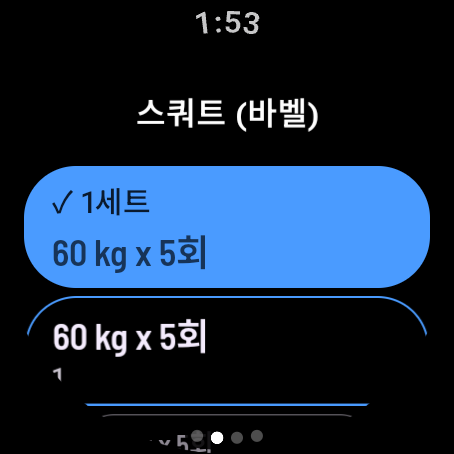
212.5kg
20kg 바에 한쪽 원판 여섯 장이에요. 눌러서 끼우면 합계는 앱이 계산해요.
갤럭시 핏: 버튼 세 개와 진동 하나
갤럭시 핏3의 음악 버튼으로 조작하니까, 휴대폰은 가방에 둬도 돼요.
밴드의 음악 버튼은 가장 최근에 재생을 시작한 앱을 조작해요. YouTube Music, Spotify나 자세 영상을 틀면 버튼이 그 앱과 FitGymLog를 오갈 수 있어요. 휴식 진동은 알림으로 와서 음악과 상관없이 받아요.
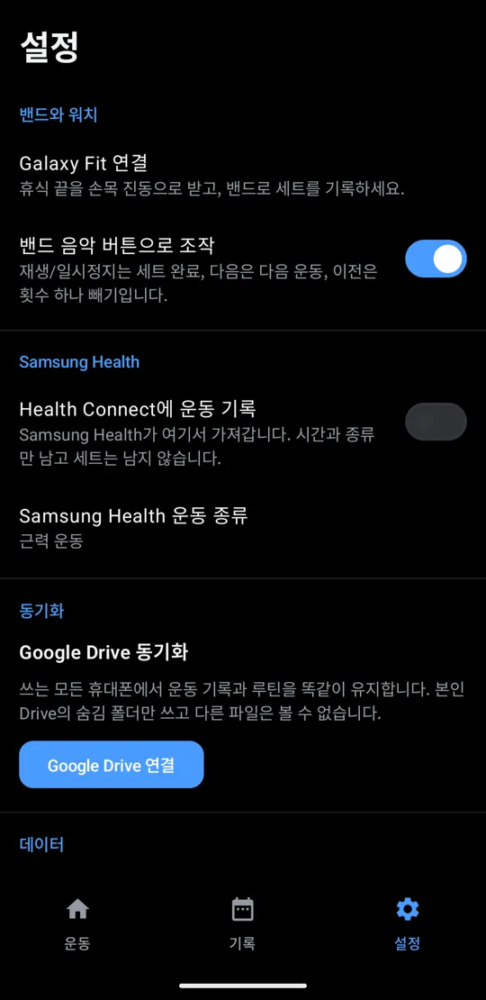
Wear OS 워치: 손목 위의 앱
갤럭시 워치, 픽셀 워치 등 Wear OS 워치에서는 FitGymLog 워치 앱이 직접 돌아가서 밴드처럼 우회할 필요가 없어요. 설정의 손목 기기에서 Wear OS 워치를 고르세요. 운동 기록은 계속 휴대폰에 있어서 워치 때문에 세트를 잃을 일이 없어요.
운동마다 한 페이지. 한 번 누르면 계획대로 다음 세트를 기록해요. 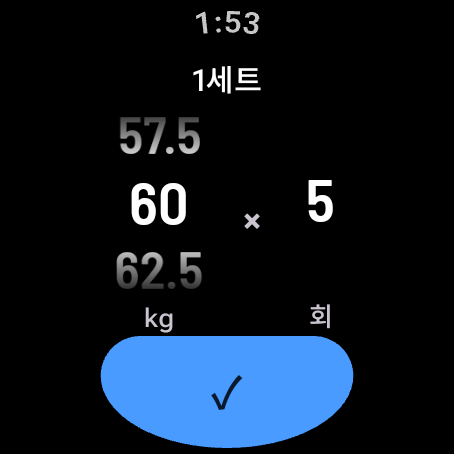
세트를 누르면 다이얼이 나와요. 손가락이나 크라운으로 돌려 실제로 든 무게를 기록해요. 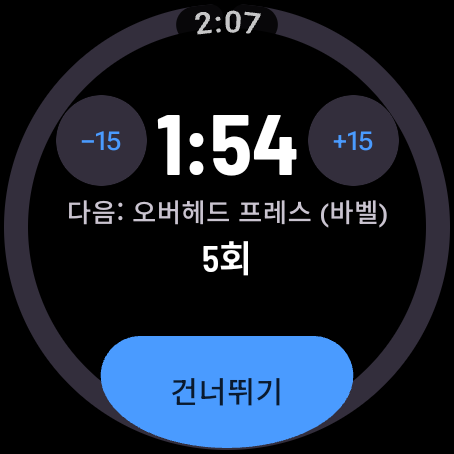
휴식은 화면 전체에 15초 단위 조절과 다음 세트로 보여요. 뒤로 밀면 운동 화면이 나와요.
루틴 시작과 운동 끝내기도 워치에서 할 수 있고, 끝낸 뒤 크라운으로 강도를 평가해요. 워치 화면의 FitGymLog 아이콘을 누르면 어디서든 운동으로 돌아와요. 휴식 끝 진동은 밴드와 같은 알림이에요.
워치 앱 설치하기
FitGymLog가 Google Play에 올라가기 전까지는 컴퓨터의 adb로 Wi-Fi를 통해 워치 앱을 설치해요. 휴대폰 앱과 같은 릴리스의 파일이어야 해요.
- 워치에서 설정, 시스템, 정보, 버전으로 가서 빌드 번호를 일곱 번 누르세요.
- 설정, 개발자 옵션에서 무선 디버깅을 켜고 새 기기 페어링을 누르세요.
- 컴퓨터에서 워치에 보이는 주소와 코드로
adb pair를 실행하고, 무선 디버깅 아래 주소로adb connect를 실행하세요. - 최신 릴리스에서
fitgymlog-wear-*.apk를 받아adb install로 설치하세요.
무게는 원판을 눌러 맞춰요
원판을 누를 때마다 양쪽에 한 장씩 끼우고, 바에 끼운 원판을 누르면 빼요. 바는 20, 15, 10kg(45, 35, 25lb) 중에 고르고, 스위치 하나로 이후 세트도 같은 무게로 맞춰요. 횟수는 숫자판으로 골라요.
- 25
- 20
- 15
- 10
- 5
- 2.5
- 1.25
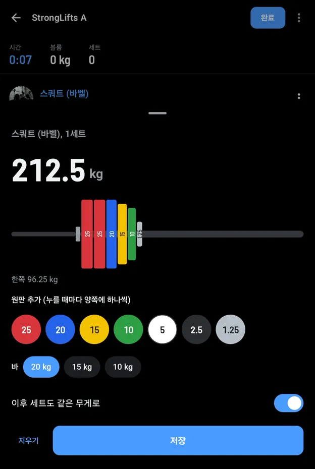
세트 사이에 자세를 확인해요
스쿼트, 벤치 프레스, 데드리프트, 오버헤드 프레스, 바벨 로우에는 StrongLifts 영상과 글이 들어 있어요. 어떤 운동에든 YouTube나 웹 링크를 넣으면 사진과 제목이 함께 보여요. 영상은 앱 안에서 바로 재생되고, 원하면 YouTube에서 열 수도 있어요.
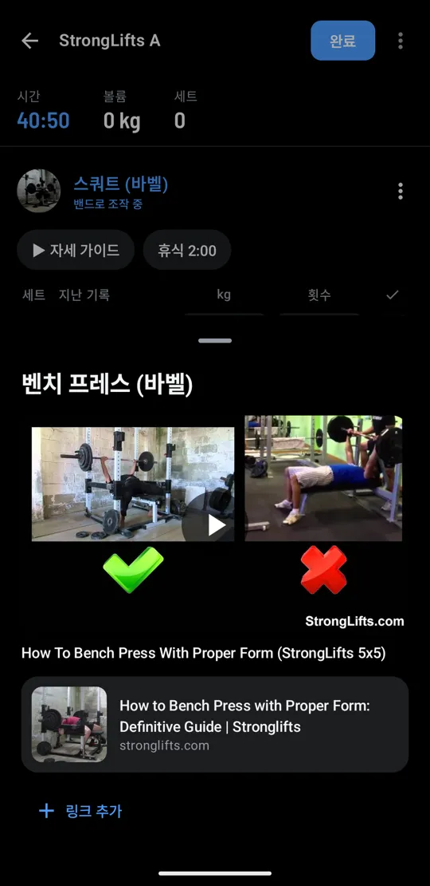
운동량, 체중, 최고 기록을 한눈에 봐요
최근 12주의 운동 횟수, 시간, 볼륨을 주별로 보고, 체중은 하루하루 출렁임을 고른 추세로 봐요. 한 주의 마지막 날 저녁에는 주간 체크인이 지난주와 비교해 한 주를 정리해 줘요.
운동을 끝낼 때나 나중에 기록에서 얼마나 힘들었는지 1~10으로 평가하면, 통계의 훈련 부하 화면이 최근 7일의 강도 × 시간을 평소 한 주와 비교한 차트로 보여 주고, 높은지, 비슷한지, 낮은지 Apple 피트니스처럼 알려 줘요. 세트별로는 RPE를 켜면 돼요. 코치는 둘 다 참고해요.
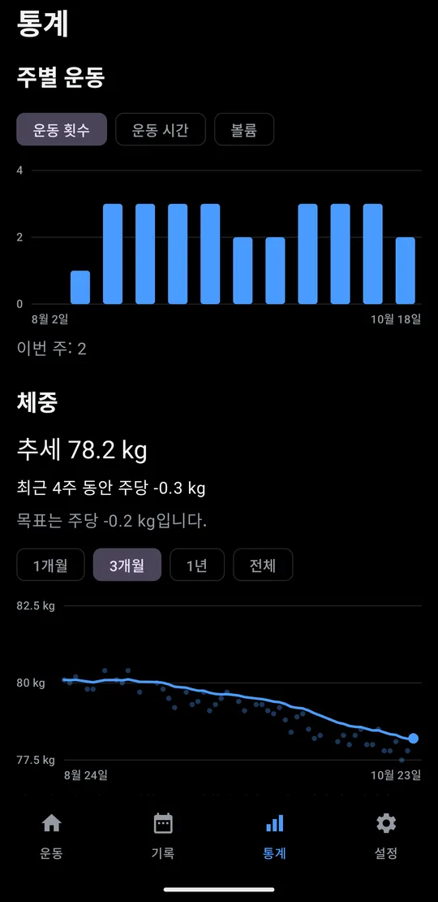
주별 운동과 체중 추세를 봐요 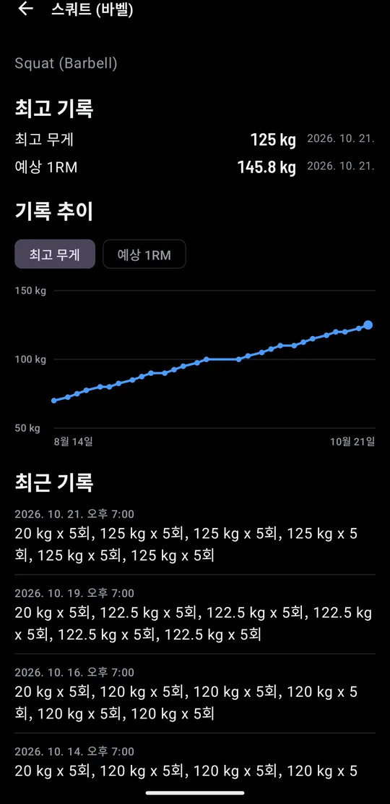
운동마다 최고 기록을 남기고, 새 기록은 기록 탭에도 표시해요 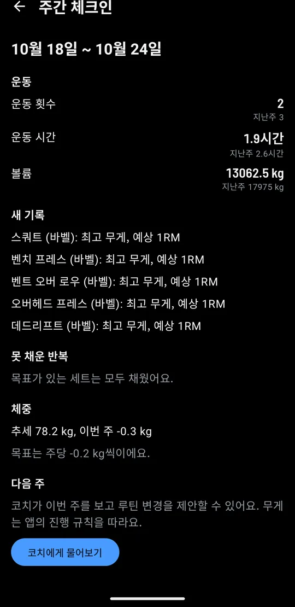
주간 체크인으로 한 주를 돌아보고, 다음 주 변경은 코치가 제안해요
인바디 결과를 첨부하고 변화를 따라가요
인바디나 스마트 체중계 결과 스크린샷을 첨부하면 코치가 체중, 체지방률, 골격근량, 내장지방 레벨을 읽어요. 저장하기 전에 숫자를 직접 확인해요. 측정할 때마다 지난번, 처음과 비교하고, 제지방량으로 하루 칼로리 목표를 계산해요.
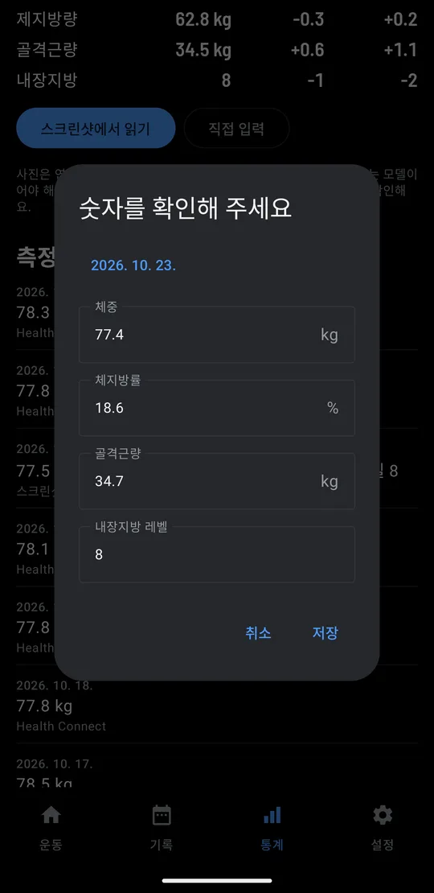
스크린샷을 첨부하고, 읽은 숫자를 확인해요 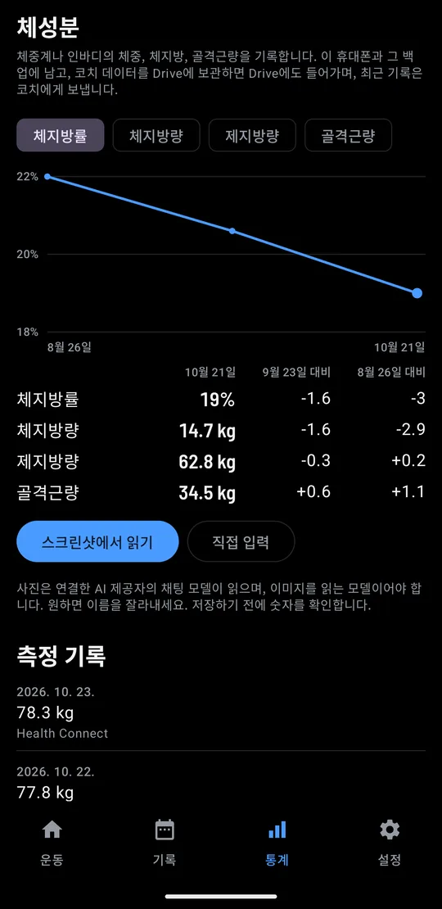
측정할 때마다 지난번, 처음과 비교해요 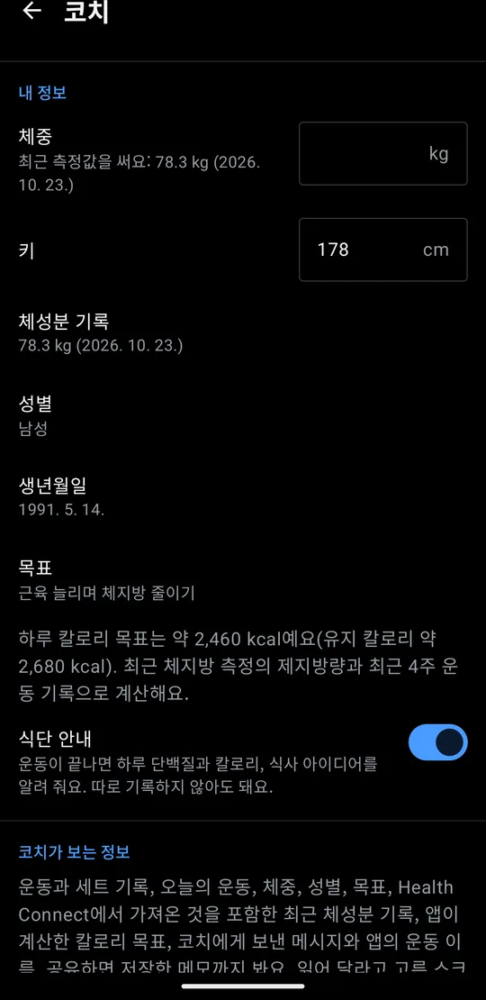
칼로리는 인바디가 기초대사량을 구하는 방식대로 제지방량에서 계산해요
숫자를 직접 입력하는 건 코치 없이도 돼요. 스크린샷 읽기는 코치가 필요하고, 연결한 모델이 읽어요.
펼친 폴드에서는 두 칸으로 봐요
Galaxy 폴드를 펼치면 운동, 기록, 통계 화면을 모두 두 칸으로 나눠 보여 줘요. 세트의 완료 칸은 오른쪽 끝, 엄지 아래에 있어요.
언제든 Hevy로 돌아갈 수 있어요
Hevy 기록을 한 번에 모두 가져와요. 한국어로 내보낸 파일도 돼요. Hevy로 돌아가고 싶으면 Strong CSV로 내보내서 Hevy에서 가져오면 돼요. Strong 파일도 가져올 수 있어요.
- Hevy
- CSV로 내보내서 가져오기
- FitGymLog
- Strong CSV로 내보내기
- Hevy
세트, 무게, 횟수를 어느 쪽으로든 그대로 옮겨요.
다섯 세트면 설정이 끝나요
5분쯤 걸려요. 하나씩 체크하면서 따라 해 보세요.
| 세트 | 할 일 | 완료 |
|---|---|---|
| 1 | 루틴 추가하기 운동 탭의 프로그램에서 StrongLifts 5x5, 전신, 상체/하체, 푸시/풀/레그를 추가해요. 새 루틴으로 직접 만들어도 돼요. |
|
| 2 | 알림 허용 휴식이 끝나면 알림으로 알려 줘요. 설정의 Galaxy Fit 연결에서 차례대로 안내해요. |
|
| 3 | Galaxy Wearable에서 FitGymLog 켜기 Galaxy Wearable 앱의 알림 메뉴에서 FitGymLog를 켜 주세요. 여기서 켠 앱의 알림만 밴드로 가요. |
|
| 4 | 진동 테스트 테스트 진동 보내기를 누르고 휴대폰 화면을 꺼 주세요. 5초 안에 밴드가 울리면 성공이에요. |
|
| 5 | Samsung Health와 Drive 연결하기 (선택) 설정에서 Health Connect에 운동 기록을 켜요. 휴대폰 두 대에서 쓰려면 Google Drive 연결을 눌러요. |
밴드 대신 Wear OS 워치를 쓰면 3세트와 4세트는 건너뛰세요. 설정의 손목 기기를 Wear OS 워치로 바꾸고, 위의 방법으로 워치 앱을 설치하면 돼요.
유산소도 함께 기록해요
러닝머신, 천국의 계단, 실내 사이클, 로잉 머신을 분 단위로 기록해요. 러닝머신은 속도와 경사, 나머지는 강도도 함께 남기고, 로잉 머신은 거리도 남겨요. 루틴에 '경사 12로 20분'처럼 넣어 두면 시작할 때 미리 채워 둬요. 유산소는 Samsung Health에 따로 한 세션으로 남고, 허용하면 러닝머신 속도와 거리도 함께 보내요. 프로그램은 StrongLifts 5x5, 전신, 상체/하체, 푸시/풀/레그 중에 고르거나 직접 만들어요.
오늘 들 무게, 코치가 알려 줘요
최근 세 번의 기록을 보고 정하고, 바쁜 날엔 운동도 줄여 주고, 얼마나 쉬었는지도 알아요. 내가 적용을 눌러야 바뀌어요.
오늘의 목표
스쿼트 (바벨)
무릎이 뻐근해서 지난번 무게 그대로
데드리프트 (바벨)
지난번 5회 모두 성공
오늘 시간이 없어요
스쿼트는 2세트로 줄이고, 러닝머신 대신 벤치 프레스를 해 봐요.
오늘 운동 변경
스쿼트 (바벨)
2세트
러닝머신 빼기
벤치 프레스 (바벨) 추가
3세트, 8회
코치 코멘트
데드리프트 100kg을 깔끔하게 끝냈어요. 무릎이 괜찮으면 다음엔 스쿼트를 2.5kg 올려 봐요.
오늘의 식단
오늘 칼로리3,010 kcal
단백질145g
다음 끼니30g
- 닭가슴살 덮밥
- 그릭 요거트와 바나나
- 두부 김치
내 API 키로, 또는 내 컴퓨터로 써요
켜기 전에는 꺼져 있어요. 켜면 내 키로 내가 고른 제공자에게만 보내거나, Ollama, LM Studio처럼 내 네트워크에 있는 모델에 키 없이 보내요. 개발자에게는 아무것도 오지 않아요.
- OpenAI
- Gemini
- Anthropic
- OpenRouter
- Groq
- DeepSeek
- OpenAI 호환 주소
- 내 네트워크의 Ollama, LM Studio
한 달에 드는 돈
| 모델 | 주 3회 | 매일 |
|---|---|---|
| 내 컴퓨터의 모델 | 무료 | 무료 |
| Gemini 3.8 Flash 무료 등급* | 무료 | 무료 (하루 한도) |
| GPT-6 Luna | $0.01 | $0.02 |
| DeepSeek Flash | $0.01 | $0.03 |
| Claude Haiku 5.5 | $0.01 | $0.03 |
| Gemini 3.8 Flash 유료 | $0.10 | $0.25 |
| GPT-6.1 Sol | $0.20 | $0.40 |
| Claude Sonnet 5.5 | $0.20 | $0.45 |
| Claude Opus 5.5 | $0.40 | $0.90 |
| GPT-6 Astra | $0.90 | $2.10 |
| Claude Fable 5.1 | $1.00 | $2.25 |
각 제공자가 2026년 10월 22일에 올린 가격이고, 세금은 빠져 있어요. Gemini Flash는 2027년 1월부터 두 배가 되고, DeepSeek는 붐비는 시간대에 두 배예요. 참고로 Hevy Pro는 한 달 4,000원부터예요.
* Google이 요청을 제품 개선에 쓸 수 있고, EEA, 영국, 스위스에서는 쓸 수 없어요.
계산 방법
앱이 실제로 보내는 요청 크기로 계산했어요. 운동 한 번에 입력 약 2,300토큰, 출력 약 400토큰을 쓰고, 대화는 주 3회면 일주일에 세 번, 매일이면 하루에 한 번을 더했어요.
기록은 내 휴대폰에 남아요
- 휴대폰에 저장해요
- 운동 기록은 휴대폰에 있고, 백업과 내보내기는 내가 보관하는 파일이에요. 계정도, 광고도, 분석 도구도 없어요.
- Samsung Health
- FitGymLog는 세트까지 모두 Health Connect에 기록하고, 유산소는 따로 한 세션씩 남겨요. Samsung Health가 거기서 가져가는데, 세트별 기록은 보여 주지 않아요.
- Google Drive 동기화도 내 Drive로
- 원할 때만 켜요. 내 Drive의 숨김 폴더에 파일 하나를 두고 휴대폰끼리 맞춰요. 앱은 그 폴더만 볼 수 있어요.
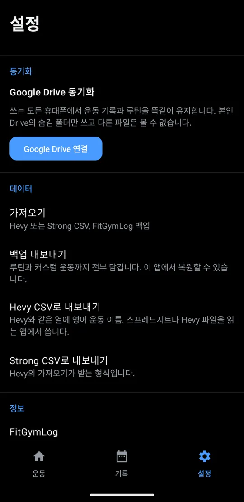
자주 묻는 질문
- 밴드의 휴식 시간이 왜 5초씩 바뀌나요?
- 휴대폰이 밴드에 보내는 업데이트를 줄이려고 남은 시간을 5초마다 바꿔요. 그 사이에도 일시정지 버튼 둘레의 링이 음악 재생 막대처럼 조금씩 차올라요.
- 갤럭시 핏 밴드가 꼭 있어야 하나요?
- 아니요, 앱만으로도 기록할 수 있어요. 밴드가 있으면 휴대폰을 가방에 둔 채 운동할 수 있어요.
- 코치는 얼마인가요?
- FitGymLog는 무료예요. AI 제공자에게 쓴 만큼만 내고, 보통 한 달에 몇십 원이에요. 금액은 코치 소개에 있어요. 코치를 켜지 않아도 운동 기록은 모두 할 수 있어요.
- 다른 워치에서도 되나요?
- 네. 갤럭시 워치나 픽셀 워치 같은 Wear OS 워치에서는 FitGymLog 워치 앱이 직접 돌아가요. Wear OS 워치 부분을 참고하세요. 휴대폰 음악을 조작하고 알림을 받는 다른 밴드도 갤럭시 핏처럼 동작할 수 있지만, 테스트한 건 핏3뿐이에요.
다른 오픈소스도 써 보세요
QuietBuzz는 모든 앱의 진동을 한 번에 끄고, Subpair는 넷플릭스와 젤리핀에서 자막 두 줄을 함께 보여 줘요. 모두 FitGymLog처럼 무료 오픈소스예요.